Шесть модулей по образцу Odoo для застройщика, перенесённые на язык компании, которая сдаёт технику и выполняет работы.
Годен
| Результат | Проверка | Фактически |
|---|---|---|
| ✔ OK | объекты и проекты: /projects | HTTP 200 |
| ✔ OK | канбан задач: /tasks | HTTP 200 |
| ✔ OK | коммерческие предложения: /sales | HTTP 200 |
| ✔ OK | закупки: /purchase | HTTP 200 |
| ✔ OK | поставщики и соглашения: /vendors | HTTP 200 |
| ✔ OK | пополнение склада: /purchase/reorder | HTTP 200 |
| ✔ OK | счета и оплаты: /invoices | HTTP 200 |
| ✔ OK | повторяющиеся счета: /plans | HTTP 200 |
| ✔ OK | таблицы: /sheets | HTTP 200 |
| ✔ OK | документы: /docs | HTTP 200 |
| ✔ OK | карточка объекта открывается | ЖК «Рышкановка», башенный кран КБ-403А |
| Результат | Проверка | Фактически |
|---|---|---|
| ✔ OK | иерархия работ построена | узлов 7 |
| ✔ OK | задача с незавершённой зависимостью не стартует | сначала нужно завершить «Монтаж башни и стрелы» |
| ✔ OK | часы записываются в табель | 52.0 → 55.5 |
| ✔ OK | себестоимость часов считается по ставке объекта | 9990.0 при 180.0/ч |
| ✔ OK | затраты объекта = закупки + труд | 29430.0 = 19440.0 + 9990.0 |
| ✔ OK | маржа = выручка − затраты | 105370.0 |
| ✔ OK | повторяющаяся задача порождает следующую | задач 7 → 8 |
| ✔ OK | веха в объекте есть | счёт по ней уже выставлен |
| ✔ OK | объект по шаблону копирует все задачи | 4 → 4 |
| ✔ OK | зависимости в копии указывают на задачи той же копии |
| Результат | Проверка | Фактически |
|---|---|---|
| ✔ OK | сумма без НДС со скидкой 10 % | 16650.0 при базе 18500 |
| ✔ OK | НДС 20 % от суммы со скидкой | 3330.0 |
| ✔ OK | итого = сумма + НДС | 19980.0 |
| ✔ OK | допработы считаются отдельно, не входят в итог | 2400.0 |
| ✔ OK | себестоимость сметы по строкам | 10200.0 |
| ✔ OK | выбранная клиентом допработа входит в сумму | 19980.0 → 22572.0 |
| ✔ OK | страница предложения для клиента открывается по ссылке | HTTP 200 |
| ✔ OK | подтверждение открывает объект работ | объект #17 |
| ✔ OK | авансовый счёт на 40 % суммы | 9028.8 из 22572.0 |
| ✔ OK | предложение помечено как «выставлен счёт» | |
| ✔ OK | PDF предложения формируется | 27125 байт |
| Результат | Проверка | Фактически |
|---|---|---|
| ✔ OK | сумма заказа по строкам | 1700.0 |
| ✔ OK | итог с НДС 20 % | 2040.0 |
| ✔ OK | подтверждение ставит срок оплаты по условиям поставщика | до 2026-10-20 |
| ✔ OK | частичная приёмка фиксируется построчно | принято 60 из 100.0 |
| ✔ OK | полная приёмка закрывает заказ | статус received |
| ✔ OK | оплата поставщику записывается | 1000 |
| ✔ OK | остаток долга поставщику считается | 1040.0 |
| ✔ OK | анализ закупок по поставщику считается | заказов 4 |
| Результат | Проверка | Фактически |
|---|---|---|
| ✔ OK | новый счёт в статусе «выставлен» | |
| ✔ OK | частичная оплата меняет статус и остаток | остаток 6000.0 |
| ✔ OK | полная оплата закрывает счёт | |
| ✔ OK | счёт с истёкшим сроком помечается просроченным | срок 2026-08-01 |
| ✔ OK | дебиторка разложена по срокам | итого 1175115.2 |
| ✔ OK | кредит-нота ссылается на исходный счёт | КН-2026-0004 |
| ✔ OK | полная кредит-нота отменяет счёт | |
| ✔ OK | регулярный счёт выставлен и план сдвинут | следующий 2026-10-05 |
| ✔ OK | напоминания по просрочке отрабатывают | писем 0 |
| Результат | Проверка | Фактически |
|---|---|---|
| ✔ OK | СУММА по диапазону | 60.0 |
| ✔ OK | СРЗНАЧ по диапазону | 20.0 |
| ✔ OK | МАКС − МИН | 20.0 |
| ✔ OK | ОКРУГЛ с десятичной запятой | 15.0 |
| ✔ OK | ЕСЛИ с условием | 100 |
| ✔ OK | ПРОЦЕНТ | 33.33 |
| ✔ OK | живая функция ТЕХНИКА берёт данные из базы | 22 |
| ✔ OK | ссылка на ячейку с живой функцией | 82.0 |
| ✔ OK | ошибок в формулах нет | {} |
| ✔ OK | циклическая ссылка не вешает расчёт | |
| ✔ OK | посторонний код в формуле отклоняется | #ОШИБКА |
| ✔ OK | сводный срез по заявкам | групп 4 |
| ✔ OK | в срез вставляется живая формула итога | |
| ✔ OK | выгрузка таблицы в Excel | 5069 байт |
| ✔ OK | выгрузка доступна из интерфейса | HTTP 200 |
| Результат | Проверка | Фактически |
|---|---|---|
| ✔ OK | рабочие пространства созданы | 6 |
| ✔ OK | теги нормализуются без повторов | договор, проверка |
| ✔ OK | файл привязан к объекту | |
| ✔ OK | новая версия становится актуальной, старая уходит в историю | v2 |
| ✔ OK | история версий доступна | |
| ✔ OK | страница загрузки по запросу открывается без входа | HTTP 200 |
| ✔ OK | запрос закрывается загруженным файлом | |
| ✔ OK | правило автообработки срабатывает по тегу | авто, договор, проверка |
| ✔ OK | сводка по документам считается | файлов 57, папок 6 |
| Результат | Проверка | Фактически |
|---|---|---|
| ✔ OK | владелец Dimecon не видит /s/macara-nord/admin/projects | HTTP 403 |
| ✔ OK | владелец Dimecon не видит /s/macara-nord/admin/sales | HTTP 403 |
| ✔ OK | владелец Dimecon не видит /s/macara-nord/admin/invoices | HTTP 403 |
| ✔ OK | владелец Dimecon не видит /s/macara-nord/admin/docs | HTTP 403 |
| ✔ OK | чужой объект по прямой ссылке недоступен | HTTP 403 |
| ✔ OK | нет предложений чужой компании на объекты Dimecon | 0 |
| Результат | Проверка | Фактически |
|---|---|---|
| ✔ OK | проверочные таблицы удалены | записей убрано 11 |
| ✔ OK | проверочный объект удалён вместе с задачами |
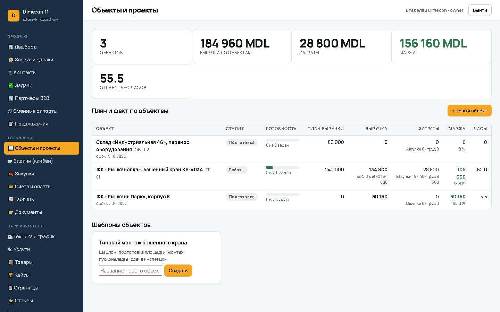
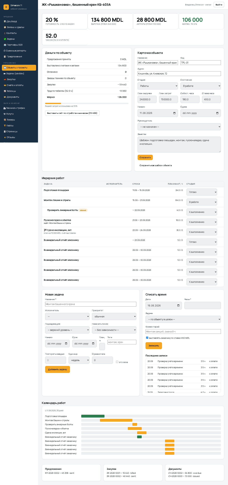
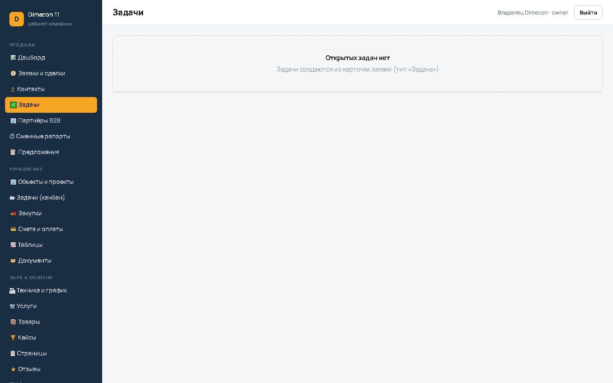
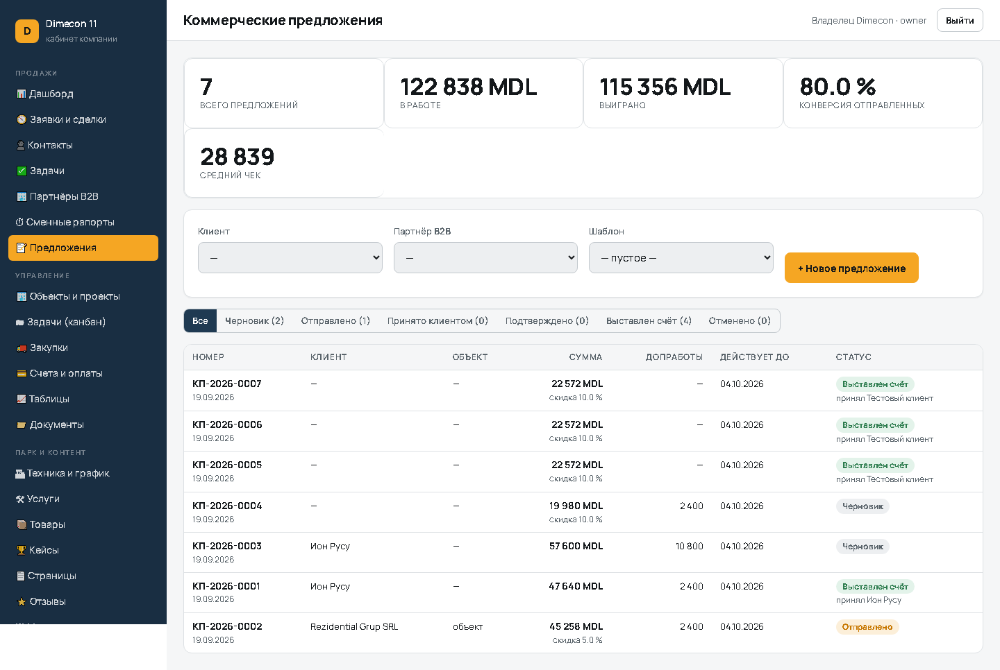
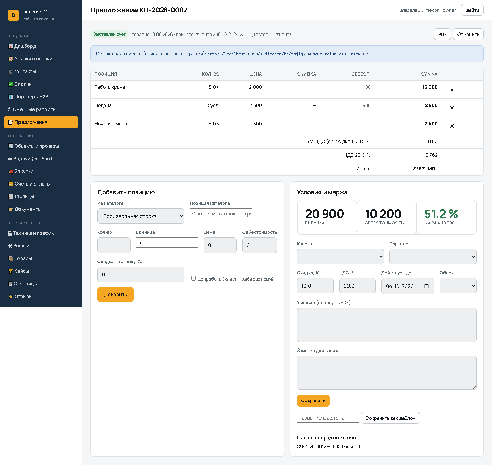
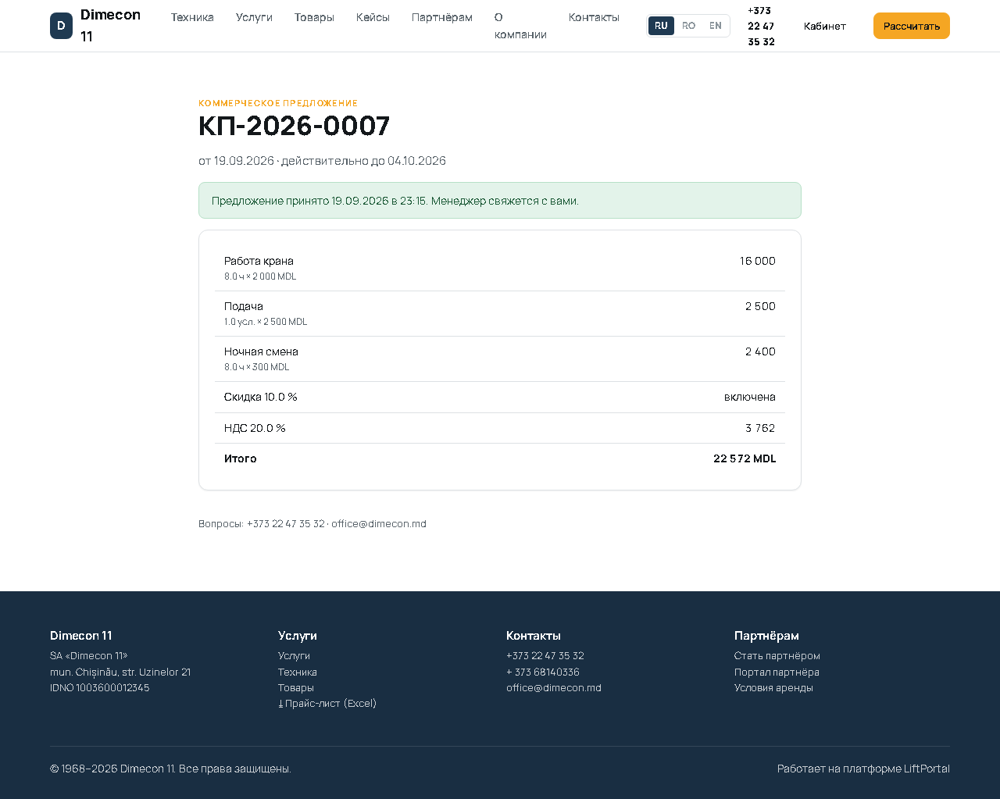
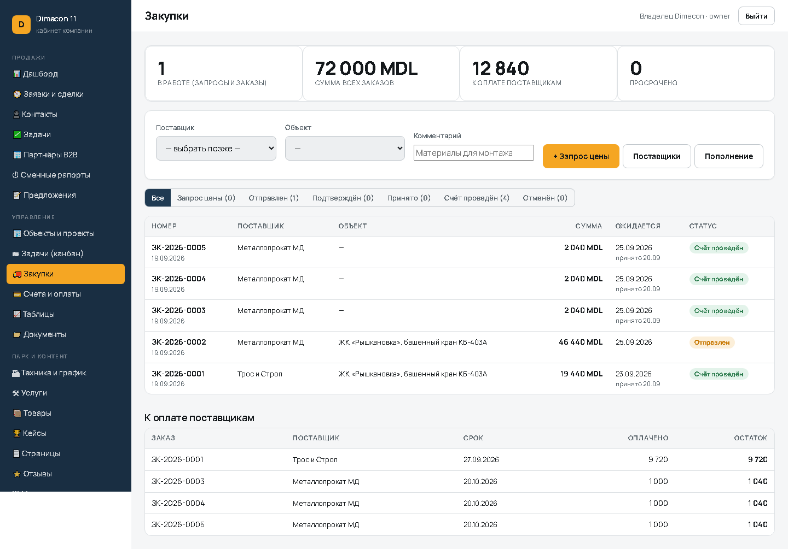
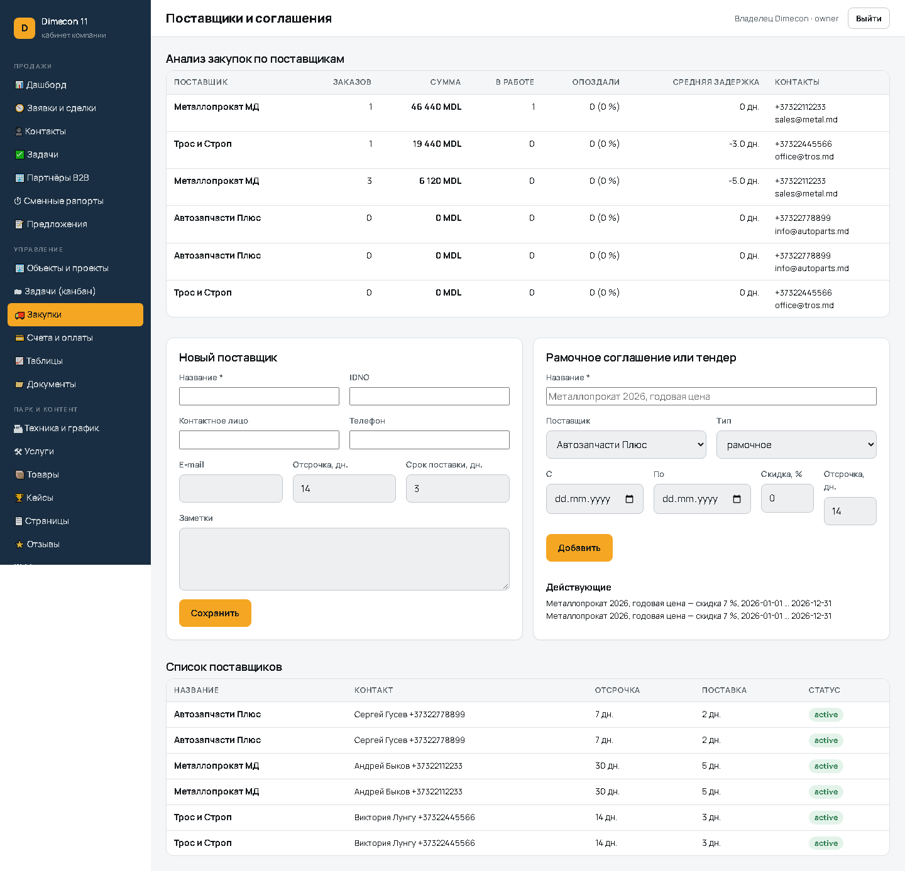
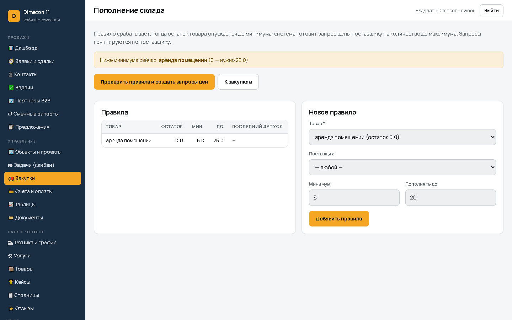
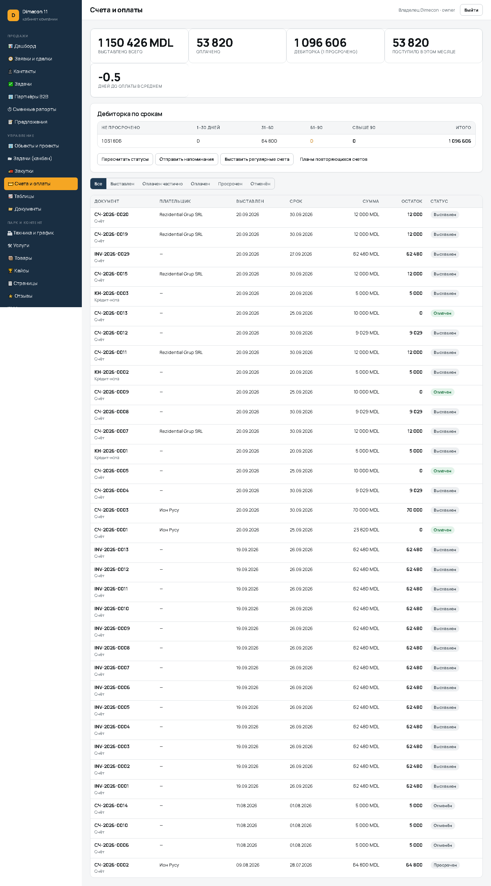
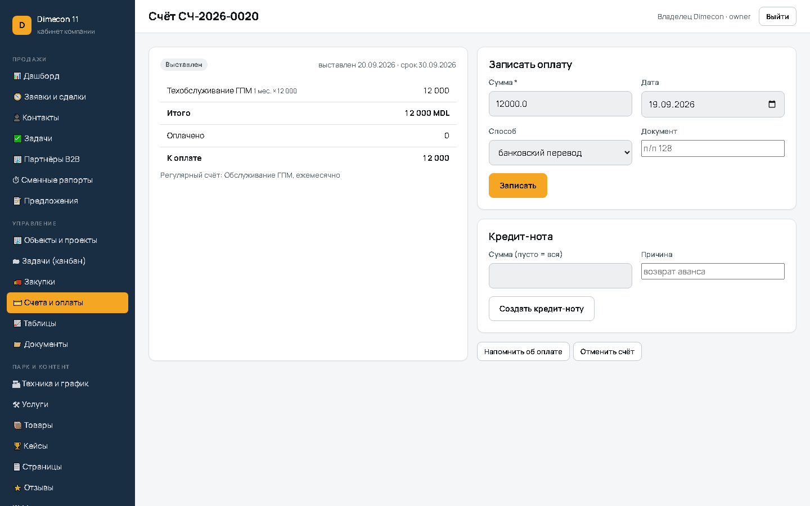
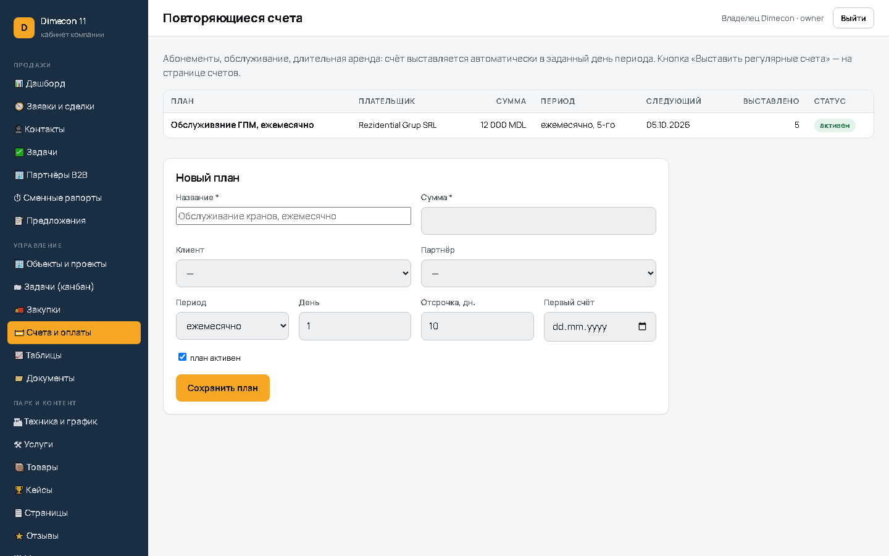
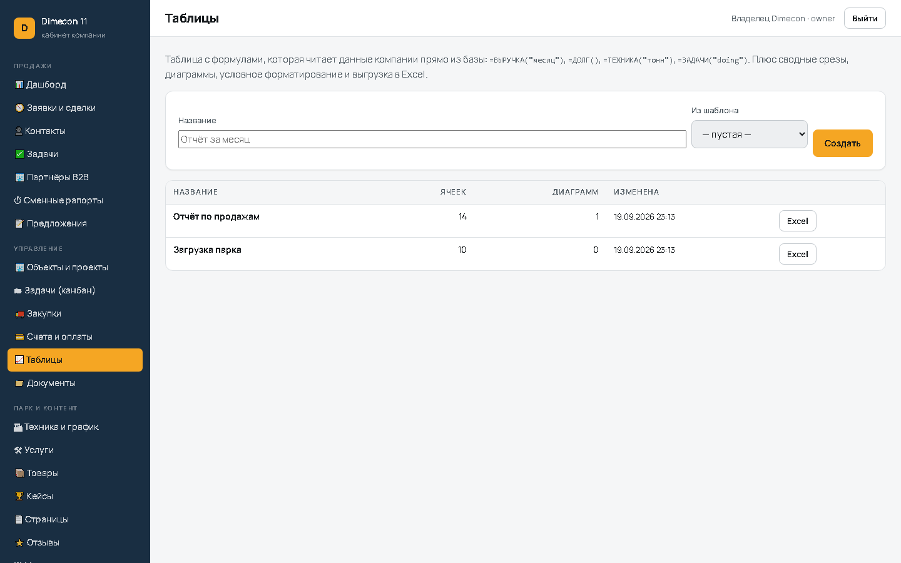
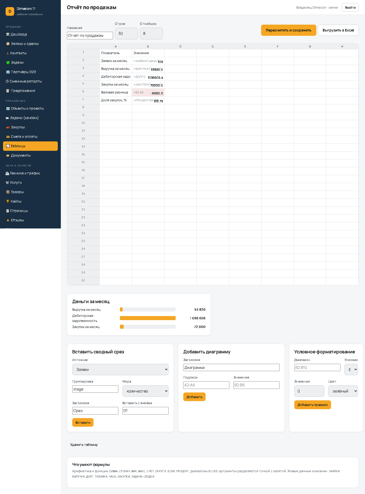
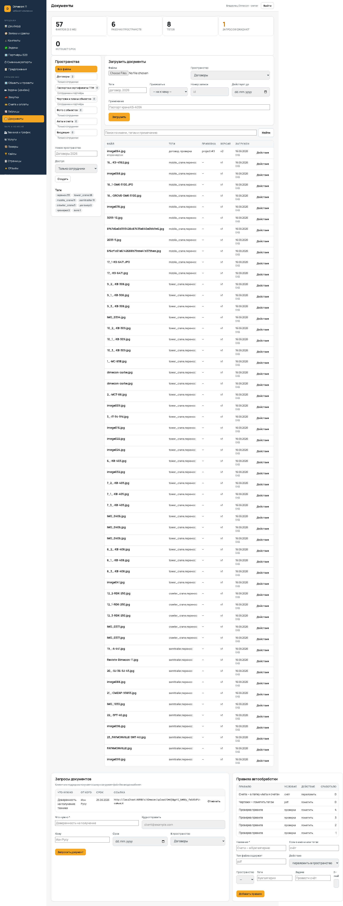
docs/*.log.
Испытания провёл: Claude (Claude Code), автоматизированный прогон.